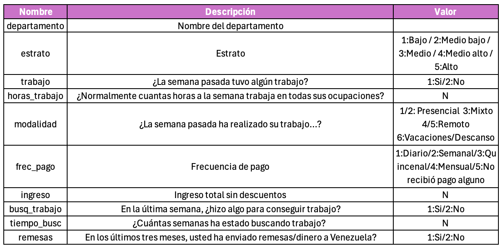
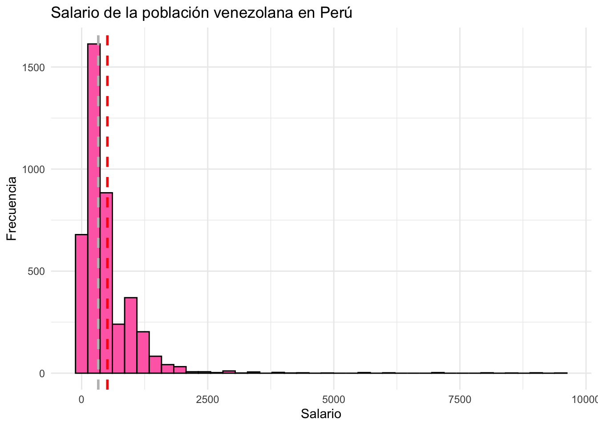
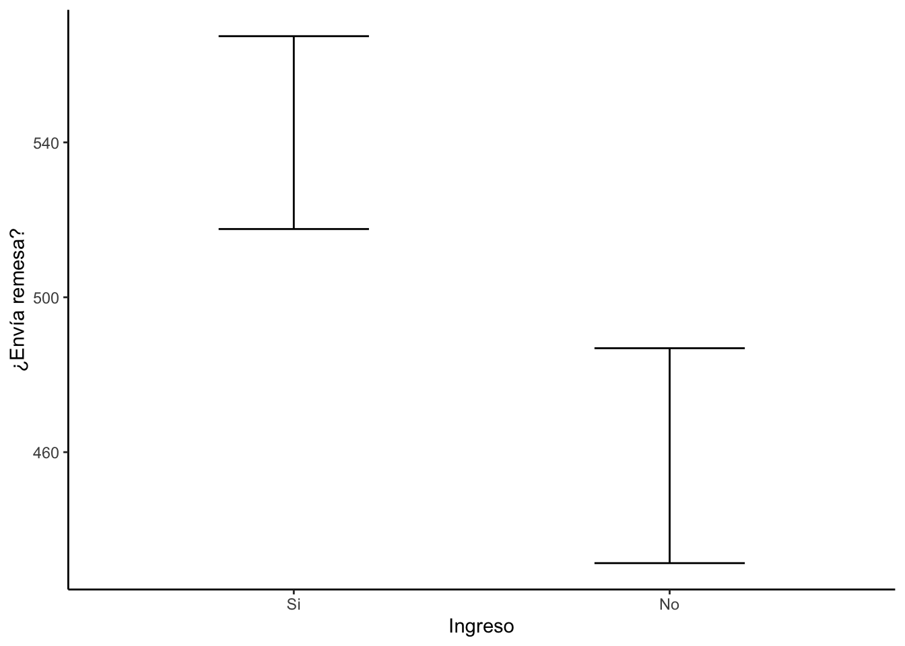
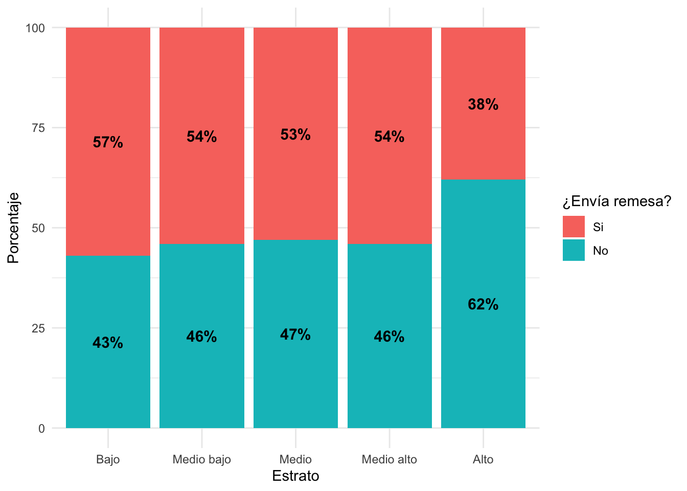

Práctica dirigida 6

FACULTAD DE CIENCIAS SOCIALES - PUCP
Curso: POL 278 - Estadística para el análisis político 1 | Semestre
2024 - 2
library(rio)
library(dplyr)
library(lsr)
library(ggplot2)Usaremos la Encuesta Nacional de Población Venezolana (ENPOVE) - 2022.
¿Cuál es la situación del empelo de la población venezolana en el Perú?
data = import("Repaso.sav")
names(data)## [1] "departamento" "estrato" "trabajo" "horas_trabajo"
## [5] "modalidad" "frec_pago" "ingreso" "busq_trabajo"
## [9] "tiempo_busc" "remesas"Diccionario de datos

1. Análisis descriptivo
¿Cuál es la proporción de venezolanos con empleo? (trabajo)
data = data %>%
mutate(trabajo =factor(trabajo,labels=c("Si","No")))tabla1 = data %>%
filter(!is.na(trabajo)) %>%
group_by(trabajo) %>%
summarise(Freq=n()) %>%
mutate(Porcentaje = (Freq/sum(Freq))*100)
tabla1## # A tibble: 2 × 3
## trabajo Freq Porcentaje
## <fct> <int> <dbl>
## 1 Si 5987 58.5
## 2 No 4240 41.5En la muestra, un 59% de venezolanos que residen en Perú, contaba con empleo.
ggplot(tabla1, aes(x=trabajo,y=Porcentaje,fill=trabajo))+
geom_bar(stat="identity")+
geom_text(aes(label=paste(round(Porcentaje,1),"%")),vjust=1.30, color="black", size=3)+
ggtitle("Venezolanos en Perú con empleo (%)")+xlab("¿La semana pasada tuvo algún trabajo?")+theme_classic()
¿Cuánto ganan los venezolanos con empleo en el Perú?
data %>%
summarise(minimo=min(ingreso,na.rm = T),
maximo=max(ingreso,na.rm = T),
media=mean(ingreso,na.rm = T),
mediana=median(ingreso,na.rm = T),
sd=sd(ingreso,na.rm = T),
Q1=quantile(ingreso,na.rm = T,0.25),
Q3=quantile(ingreso,na.rm = T,0.75))## minimo maximo media mediana sd Q1 Q3
## 1 0 9500 511.0324 330 620.282 200 600data %>%
ggplot(aes(x = ingreso)) +
geom_histogram(color = "black", fill = "hotpink1", bins = 40) +
ggtitle("Salario de la población venezolana en Perú ") +
ylab("Frecuencia")+xlab("Salario")+
geom_vline(xintercept = mean(data$ingreso, na.rm = TRUE), color = "red", linetype = "dashed", size = 1) + # Línea de la media
geom_vline(xintercept = median(data$ingreso, na.rm = TRUE), color = "grey", linetype = "dashed", size = 1) + # Línea de la mediana
theme_minimal()
2. Intervalo de confianza para proporción
Encontramos que la proporción de venezolan@s con empleo en el Perú es de 59%, calculemos cuanto será este valor en la población.
Previamente ya habíamos calculado la frecuencia de los que contaban con empleo y los que no, ingresemos esos datos en el prop.test
tabla1## # A tibble: 2 × 3
## trabajo Freq Porcentaje
## <fct> <int> <dbl>
## 1 Si 5987 58.5
## 2 No 4240 41.5prop.test(5987,5987+4240)##
## 1-sample proportions test with continuity correction
##
## data: 5987 out of 5987 + 4240, null probability 0.5
## X-squared = 298.09, df = 1, p-value < 2.2e-16
## alternative hypothesis: true p is not equal to 0.5
## 95 percent confidence interval:
## 0.5757838 0.5949741
## sample estimates:
## p
## 0.5854112La proporción de venezolanos/as con empleo en Perú se encuentra entre 57.5% y 59.4%, a un 95% de confianza.
3. Intervalo de confianza para media
Anteriormente, encontramos que los venezolanos en Perú ganan en promedio 511 soles. Calculemos cuanto es este valor en la población.
data %>%
summarise(media = mean(ingreso,na.rm=T),
Superior = ciMean(ingreso,na.rm=T),
Inferior = ciMean(ingreso,na.rm=T))## media Superior.2.5% Superior.97.5% Inferior.2.5% Inferior.97.5%
## 1 511.0324 492.2745 529.7902 492.2745 529.7902A un 95% de confianza podemos concluir que, en promedio, un/a venezolan@ que trabaja en Perú gana aproximadamente entre 492.2 y 529.7 soles. Hay que tener en consideración que este monto es en cada pago, que puede ser quincenal, mensual, etc.
4. Prueba T
¿Existe diferencia entre el monto percibido (ingreso) entre los venezolanos que envían remesas (remesas) y los que no?
data = data %>% mutate(remesas = factor(remesas, labels = c("Si","No")))grafico = data %>%
filter(!is.na(remesas)) %>%
group_by(remesas) %>%
summarise(media = mean(ingreso,na.rm=T),
Superior = ciMean(ingreso,na.rm=T)[1],
Inferior = ciMean(ingreso,na.rm=T)[2])
grafico## # A tibble: 2 × 4
## remesas media Superior Inferior
## <fct> <dbl> <dbl> <dbl>
## 1 Si 543. 518. 567.
## 2 No 459. 431. 487.En la muestra si existe una diferencia entre los ingresos de los que envían remesas y los que no. Siendo el ingreso más alto el de los que sí envían. Analicemos si esto se cumple en la población de venezolanos en Perú.
t.test(ingreso~remesas,data)##
## Welch Two Sample t-test
##
## data: ingreso by remesas
## t = 4.3886, df = 3677.7, p-value = 1.173e-05
## alternative hypothesis: true difference in means between group Si and group No is not equal to 0
## 95 percent confidence interval:
## 46.16303 120.71568
## sample estimates:
## mean in group Si mean in group No
## 542.5315 459.0921H0: No existe diferencia entre los promedios de ingreso de los que envían remesas y los que no. /H1: Existe diferencia entre los promedios de ingreso de los que envían remesas y los que no.
Analizando el pvalor, podemos rechazar la hipótesis nula y así afirmar que las medias de ingreso de los que envían remesas y los que no, no son iguales.
Constatemos cual es la media más alta con un gráfico:
ggplot(grafico,aes(x=remesas,y=media))+
geom_errorbar(aes(ymin=Inferior,ymax=Superior),width=0.4)+
xlab("Ingreso")+
ylab("¿Envía remesa?")+theme_classic()
5. Prueba Chi Cuadrado
¿De qué manera se relaciona el estrato con el envío de remesas?
data = data %>%
mutate(estrato = factor(estrato,labels=c("Bajo","Medio bajo","Medio","Medio alto","Alto")))table(data$remesas)##
## Si No
## 4443 3867tabla1=table(data$estrato,data$remesas)
tabla1##
## Si No
## Bajo 555 422
## Medio bajo 1397 1168
## Medio 1557 1400
## Medio alto 848 737
## Alto 86 140Revisemos el supuesto
chisq.test(tabla1)$expected##
## Si No
## Bajo 522.3599 454.6401
## Medio bajo 1371.3953 1193.6047
## Medio 1580.9809 1376.0191
## Medio alto 847.4314 737.5686
## Alto 120.8325 105.1675Si cumple con el mínimo por celda.
tablapor1 = tabla1 %>%
prop.table(1) %>%
round(2) #redondear el resultado a 2 decimales
tablapor1##
## Si No
## Bajo 0.57 0.43
## Medio bajo 0.54 0.46
## Medio 0.53 0.47
## Medio alto 0.54 0.46
## Alto 0.38 0.62toPlot1 = as.data.frame(tablapor1)
names(toPlot1) = c("Estrato", "Remesa", "Porcentaje") ggplot(toPlot1, aes(x=Estrato, y=Porcentaje*100, fill=Remesa)) +
geom_bar(position="stack", stat="identity")+ #Stack indica que son barras apiladas
geom_text(aes(label=paste0(Porcentaje*100,"%")),
position = position_stack(vjust = 0.5),
size = 4,
fontface="bold")+
labs(x="Estrato", y="Porcentaje", fill="¿Envía remesa?")+
theme_minimal()
chisq.test(tabla1)##
## Pearson's Chi-squared test
##
## data: tabla1
## X-squared = 27.771, df = 4, p-value = 1.388e-05